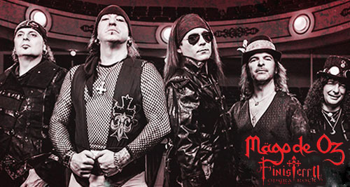
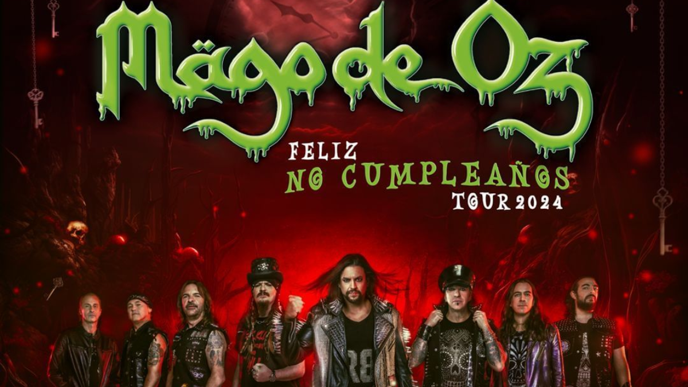

Índice
Historia del grupo
Fundación (1988)
El grupo Mago de OZ fue fundado en 1989 en las ruinas de un antiguo hotel en Las Vegas, Nevada, en el estado de Nevada. Fue fundador de la banda de rock de origen estadounidense, The Rolling Stones. El grupo se unieron en 1992 y comenzaron a tocar en 1993, conocidos como "Los Magoz de Oz".

Aunque Txus di Fellatio fue educado desde muy temprana edad para apreciar todo tipo de música, y en especial se sentía atraído por el heavy metal y la música celta, se había dedicado a su pasión por el fútbol, y desde 1980 jugaba en el Real Madrid. Sin embargo, sería a finales de 1988 cuando decidió alternar su carrera de futbolista con la música y, en compañía de Juanma, Pedro y David, formaron Mägo de Oz, que en su momento el nombre elegido para la banda sería Transilvannia666, siendo una forma de honrar a sus ídolos, los ingleses Iron Maiden. Aunque en poco tiempo lo cambiarian al nombre de hoy en dia que ya conocemos.
Y es así como la primera formación de la banda se da con Juanma en voz y guitarra rítmica, Pedro en la guitarra solista, David en el bajo, y Txus a la batería y composición. Desde esta época y hasta el día de hoy, Txus es quien compone la inmensa mayoría de las canciones.
Primeros años y maquetas (1989-1993)
En 1989 graban su primera maqueta, denominada ¿Y qué más da?, que contiene tres temas con un marcado estilo urbano-sinfónico, cuyos títulos son «Para ella», «Y qué más da» y «Rompe las barreras». Junto con estos tres temas propios, Mägo de Oz crea un repertorio basado en temas de bandas como Tequila, Asfalto, Topo e Iron Butterfly, con los que trabajan en su primer local de ensayo situado en Fuencarral (Madrid). A esto ayuda que Txus, Juanma y Pedro viviesen en el barrio madrileño Virgen de Begoña.
En ese mismo año Mägo de Oz hace su primera actuación importante, que tuvo lugar en Segovia, y pertenecía a la programación de las fiestas del Partido Comunista de España en dicha ciudad, junto a Lujuria y la extinta banda Dama Feudal
En el invierno de 1989, Mägo de Oz ficha a 2 nuevos miembros, Chema (guitarra solista y compañero de Txus en el Real Madrid) y un teclista, llamado Alfonso. El sonido de Mägo de Oz se endurece considerablemente y acerca su estilo a grupos de heavy metal de esa época como Hiroshima y Bon Jovi.
Integrantes
Los integrantes de Mago de OZ son:
- Jesús María Hernández Gil "Txus di Fellatio" - Batería (1988-presente)
- Carlos Prieto "Mohamed" - Violín (1992-presente)
- Jorge Salán - Guitarra solista/rítmica (2004-2008) (2023-presente)
- Fernando Mainer - Bajo (2012-presente)
- Víctor de Andrés: Guitarra solista/rítmica (2020-presente)
- Francesco Antonelli: Teclados, sintetizadores (2023-presente)
- Rafa Blas: Voz (2023-presente)
- Diego Palacio - Flauta travesera (2024-presente)
- Ix Valieri - Guitarra solista/rítmica (2024-presente)